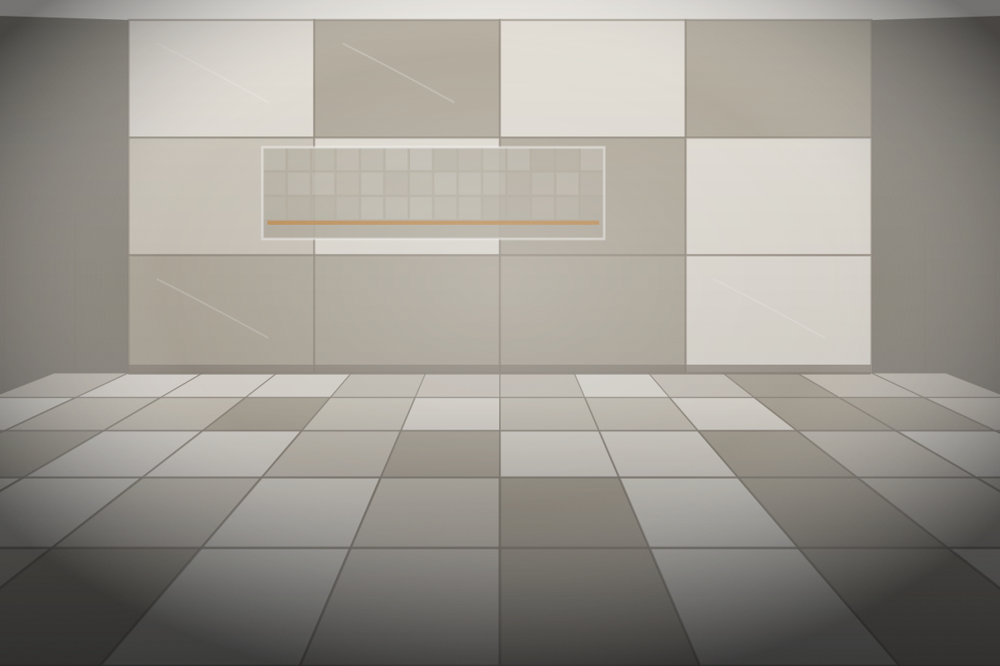
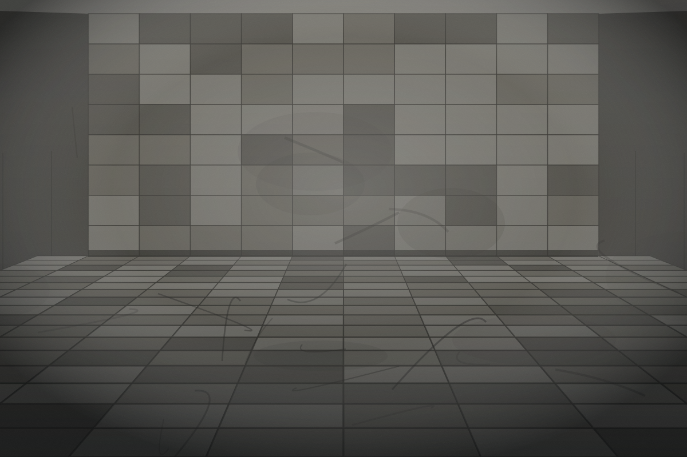

Nos projets
Réalisations
Un aperçu de projets de carrelage, de rénovation et de gestion de chantier. Cliquez sur un projet pour voir sa fiche complète et comparer l’avant et l’après.
Aucun projet ne correspond à cette catégorie pour l’instant.
Vous préparez un projet similaire ? Chaque chantier a ses contraintes propres. Décrivez-nous le vôtre et nous vous dirons franchement ce qui est réalisable, dans quel ordre et selon quel échéancier.
Avant / après
La différence se joue dans la préparation
Faites glisser le curseur pour comparer l’état initial et le résultat livré. Sur une reprise de surface, l’essentiel du travail se trouve sous ce qui est visible : support, planéité, étanchéité, alignements.
Demander une soumission
Avant Après- Type de projet
- Services réalisés
- Localisation
- Durée approximative

Parlons de votre projet
Vous avez un projet ? Parlons-en.
Que vous planifiiez une rénovation, un projet de construction, des travaux de carrelage ou que vous ayez besoin d’une gestion efficace de votre chantier, Construction AVQ inc. est là pour vous accompagner.